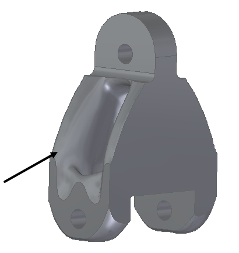
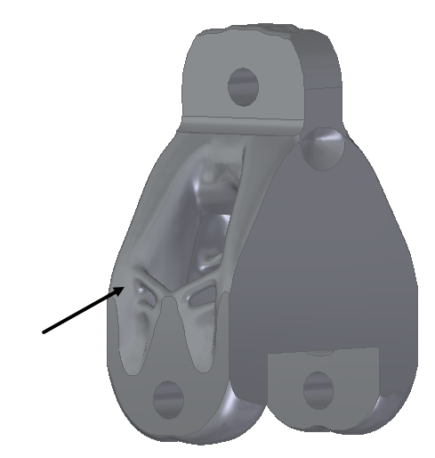
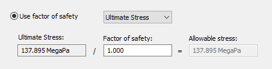
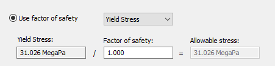
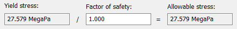
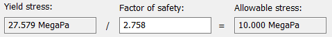

Generate Study dialog box
The Generate Study dialog box is displayed when you select the Generate command  to solve a generative design study.
to solve a generative design study.
You can optimize the part by solving for a specific value. You also can choose a general quality or a maximum value that you want to optimize for, such as mass or factor of safety. The method you choose should be based on the design and operational requirements for the part. Different optimization criteria can affect the resulting stresses on the part.
Processing options
Adjust the Generate Study dialog box processing options to produce different results. You can:
-
Reduce mass based on a target value or percentage.
-
Reduce mass based on a known factor of safety standard.
-
Reduce mass by increasing the study quality.
- Study Quality
-
Use the Study Quality option to allow the optimizer to determine the best way to reduce the weight of the part. Increasing the study quality improves the precision and balance in the results. Drag the slider to adjust the quality from Low (less mass is removed) to High (more mass is removed).
- Voxel size
-
Voxel size represents the side length of a unit cube in a 3D model (similar to the pixel in 2D pictures). Use this value to get the desired quality of output. Currently, the range of voxel size is automatically calculated based on the model size.
You can start with a lower study quality, and then review the stress results using the Show Stress command
 . If the stress results are higher than desired, or if you want to remove more material
from the part, reopen the Generate Study dialog box and use the slider to increase the study quality.Example:
. If the stress results are higher than desired, or if you want to remove more material
from the part, reopen the Generate Study dialog box and use the slider to increase the study quality.Example:Study Quality=20

Study Quality=200

Note:Study quality affects the default offset value that is displayed when you define a load, constraint, or preserved region. A higher study quality setting requires a smaller offset volume. This is because the study results are more accurate, and there is less chance that small features are removed. A lower study quality requires a larger offset volume, to prevent too much material from being removed during processing.
You can set a default study quality on the Generative Design page of the Solid Edge Options dialog box.
- Mass Reduction
-
Specifies the goal for the optimized mass of the resulting mesh body. You can choose to optimize by solving for a specific mass value or to optimize the mass to meet a desired factor of safety.
- Reduce by this percentage
-
Select this option when you want to optimize mass by a percent of the original or by entering a known target value.
- Slider
-
Drag the slider to the desired percentage by which you want to reduce the weight of the part.
- Original mass
-
Shows the mass of the input body in the design space.
- Target mass
-
Assigns a specific mass value to the output mesh body.
- Use factor of safety
-
Select this option when you want to reduce the mass within the stress limits of a factor of safety. From the adjacent list, choose the stress type to optimize for:
-
Yield Stress—The stress value at which the shape deforms permanently, based on the selected material.
-
Ultimate Stress—The stress value at which the material breaks.
The Generate Study dialog box updates to show the current Yield Stress value or Ultimate Stress value for the selected material.


In the Factor of safety box, enter the value to apply during optimization.
Note:You can obtain the desired factor of safety value from a specification or by consulting an industry standard. You also can calculate the factor of safety based on the maximum allowable design stress for your part.
The formula to determine the Factor of Safety (FoS) value is:
FoS=Yield Stress/Maximum Allowable Stress
- Yield Stress / Ultimate Stress
-
For the material that is currently assigned to the design space body in this study, displays the read-only value at which that material deforms or fails.
- Factor of safety
-
Enters the factor of safety limit value. The default value is 1.000.
Example:If the material is Aluminum 1060, then the default yield stress for the material is 27.579 MegaPa. With a default yield stress of 1.000, the allowable stress for the output mesh body is also set to 27.579 MegaPa.

Based on the formula shown, if your part design requires an allowable stress of 10 MegaPa, then the factor of safety you enter should be 2.758.

- Allowable stress
-
Displays the read-only allowable stress value for the output mesh body, based on the current yield stress and factor of safety.
-
- Results Display
-
- Hide design space when results are displayed
-
Displays only the resulting mesh body in the results, and not the input body selected in the design space. The display of the design bodies can be controlled using PathFinder.
- Generate
-
Applies all of the study inputs and begins the TO4D software structural optimization process. The Generative Design Process Information dialog box is displayed when processing completes or if there are errors.
The resulting output is a mesh model consisting of triangles (facets). For information about how you can use the resulting body, see Using Generative Design results.